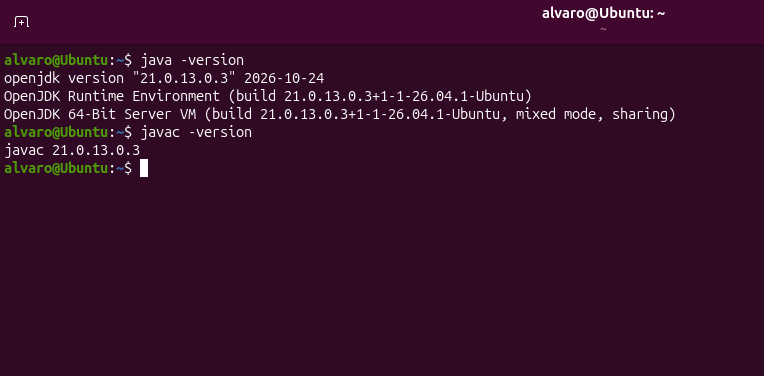
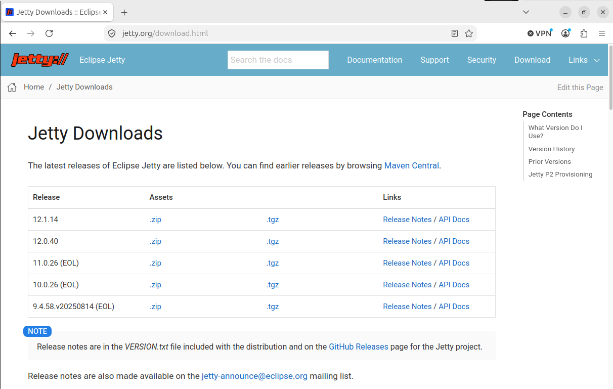
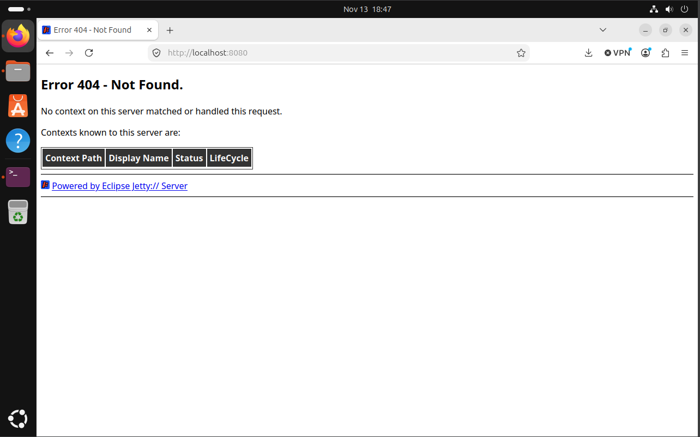

1. ¿Qué es Eclipse Jetty?
Eclipse Jetty es un servidor web y contenedor de aplicaciones Java que permite ejecutar aplicaciones web mediante tecnologías como Servlets y JSP. Esta guía explica cómo instalarlo en Ubuntu Linux y comprobar que puede ejecutar código Java.
2. Requisitos previos
- Ubuntu Linux 26.04.1 LTS (Resolute Raccoon).
- Conexión a Internet para descargar e instalar el software.
- Java JDK 21. Jetty 12.1 requiere Java 17 o una versión posterior.
Instalar y comprobar Java
- Abre una terminal de Ubuntu.
- Actualiza la lista de paquetes e instala el JDK 21:
sudo apt update
sudo apt install openjdk-21-jdk- Comprueba que Java y el compilador están instalados:
java -version
javac -versionLos dos comandos deben mostrar la versión instalada. Si Java ya está instalado, comprueba que sea la versión 17 o posterior antes de continuar.

3. Descargar Eclipse Jetty
- Abre la página oficial de descargas de Eclipse Jetty.
- Selecciona la versión estable 12.1 y descarga el archivo comprimido
.tgz. - Guarda el archivo descargado en la carpeta Descargas de Ubuntu.
Jetty 12.1 es compatible con Java 17 o posterior y permite desplegar aplicaciones web de Jakarta EE 11, entre otras versiones.

4. Instalar y configurar Jetty
Descomprimir los archivos
- Abre una terminal y crea la carpeta donde se instalará Jetty:
sudo mkdir -p /opt- Descomprime el archivo descargado. Si se ha guardado en Descargas con el nombre indicado, ejecuta:
sudo tar -xzf ~/Descargas/jetty-home-12.1.14.tgz -C /opt
Se creará la carpeta /opt/jetty-home-12.1.14, que contiene los archivos del servidor.
Crear el directorio de configuración
- Crea el directorio que almacenará la configuración y las aplicaciones desplegadas:
sudo mkdir -p /opt/jetty-base
sudo chown -R "$USER":"$USER" /opt/jetty-base- Define las variables de entorno para indicar dónde están instalados Jetty y su configuración:
echo 'export JETTY_HOME=/opt/jetty-home-12.1.14' >> ~/.bashrc
echo 'export JETTY_BASE=/opt/jetty-base' >> ~/.bashrc
source ~/.bashrc- Accede al directorio de configuración y activa los módulos HTTP, despliegue de aplicaciones Jakarta EE 11 y JSP:
cd "$JETTY_BASE"
java -jar "$JETTY_HOME/start.jar" --add-modules=http,ee11-deploy,ee11-jspEstos módulos habilitan el acceso HTTP, el despliegue de aplicaciones web y la ejecución de páginas JSP.
Iniciar el servidor
- Desde la terminal, ejecuta:
java -jar "$JETTY_HOME/start.jar"Jetty se iniciará utilizando el puerto HTTP 8080. Mantén abierta la terminal mientras el servidor esté funcionando.

5. Ejecutar código Java mediante JSP
- Con el servidor detenido o desde otra terminal, crea una carpeta para la aplicación dentro del directorio de aplicaciones:
mkdir -p "$JETTY_BASE/webapps/PruebaJava"- Crea el archivo JSP:
nano "$JETTY_BASE/webapps/PruebaJava/index.jsp"- Escribe el siguiente contenido y guarda el archivo:
<%@ page contentType="text/html; charset=UTF-8" pageEncoding="UTF-8" %>
<!DOCTYPE html>
<html lang="es">
<head>
<meta charset="UTF-8">
<title>Prueba Java</title>
</head>
<body>
<h1>Jetty funciona correctamente</h1>
<%
String mensaje = "Java se está ejecutando en el servidor";
%>
<p><%= mensaje %></p>
</body>
</html>
En Nano, guarda con Ctrl + O, pulsa Enter y sal con
Ctrl + X.
- Inicia Jetty desde una terminal:
cd "$JETTY_BASE"
java -jar "$JETTY_HOME/start.jar"- Abre el navegador y accede a la siguiente dirección:
http://localhost:8080/PruebaJava/Debe aparecer el encabezado «Jetty funciona correctamente» y el mensaje generado mediante código Java. Esto comprueba que Jetty está ejecutando una página JSP.
Para detener el servidor, vuelve a la terminal donde se está ejecutando y pulsa
Ctrl + C.